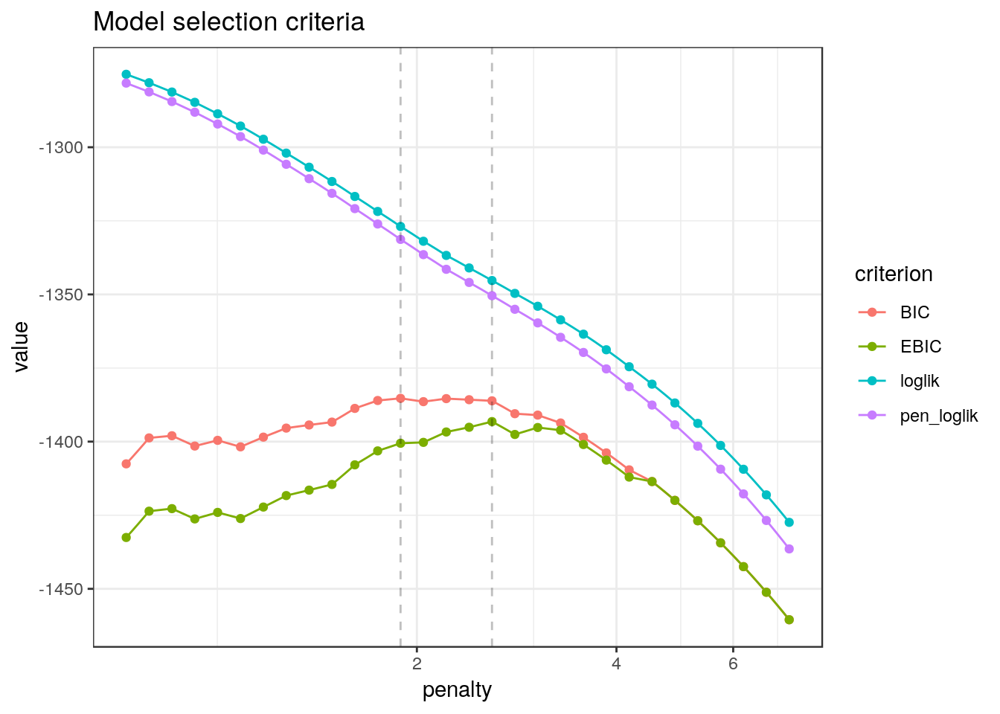
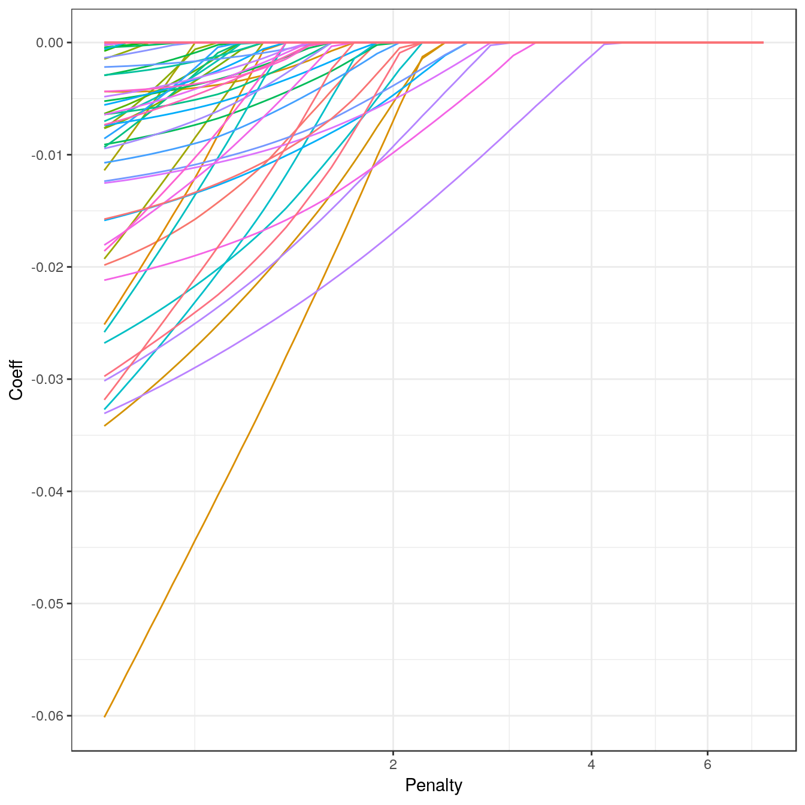
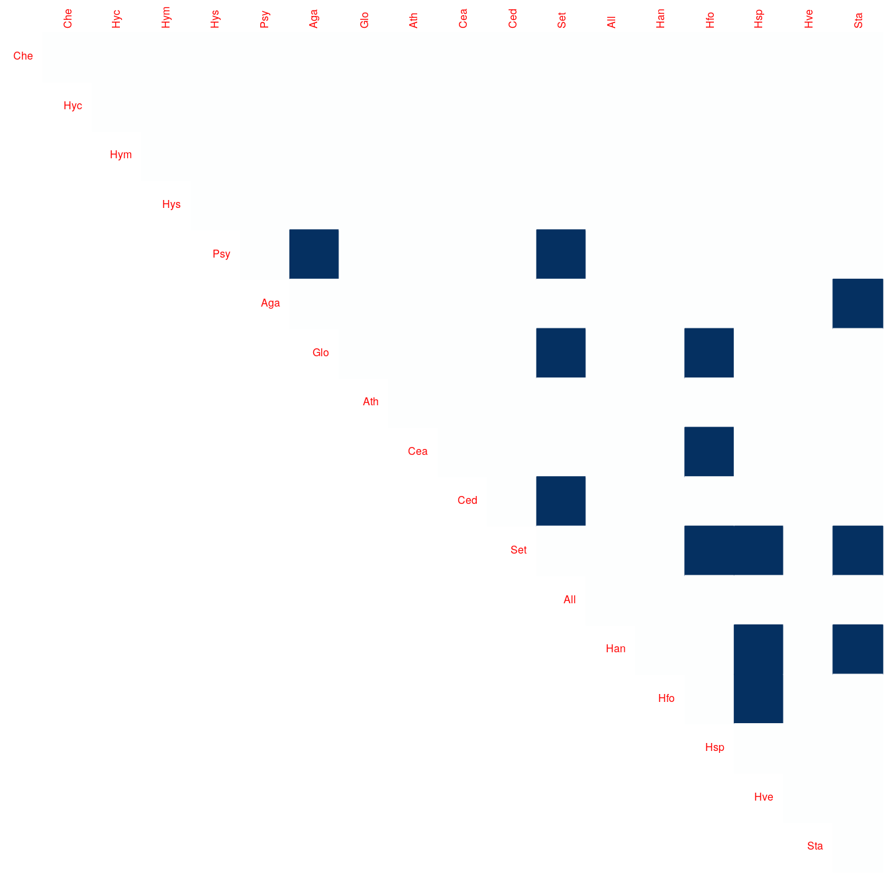
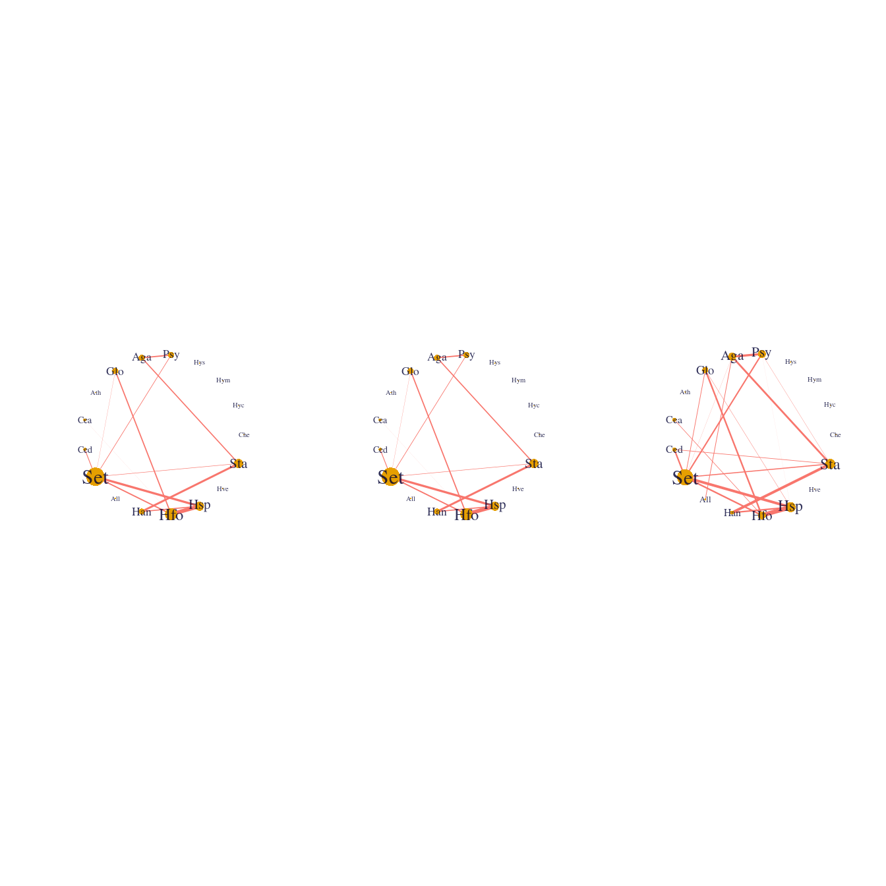
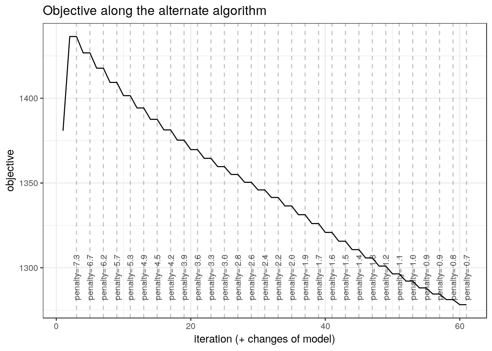

Analyzing the Trichopetra data set with Poisson log-normal Network inference
Julien Chiquet
2018-12-01
Source:vignettes/PLNnetwork_trichoptera.Rmd
PLNnetwork_trichoptera.RmdThis vignette intends to illustrate the basical use of the PLNnetwork function and the methods accompaning the R6 Classes PLNnetworkfamily and PLNnetworkfit. To this end, let us consider an ecological data set concerning abundances of Trichopetera species, coupled with some meteological factors that may influence the presence their presence.
See ?PLNmodels::trichoptera for details.
Sparse Poisson log-normal models
A quick view of the mathematical formulation of the model
The Poisson lognormal model relates some \(p\)-dimensional observation vectors \(\mathbf{Y}_i\) to some \(p\)-dimensional vectors of Gaussian latent variables \(\mathbf{Z}_i\) as follows \[\begin{equation} \label{eq:pca-model} \begin{array}{rcl} \text{latent space } & \mathbf{Z}_i \sim \mathcal{N}{\boldsymbol\mu},\boldsymbol\Sigma) \\ \text{observation space } & Y_{ij} | Z_{ij} \quad \text{indep.} & Y_{ij} | Z_{ij} \sim \mathcal{P}\left(\exp\{Z_{ij}\}\right) \end{array} \end{equation}\]
The parameter \({\boldsymbol\mu}\) corresponds to the main effects and the latent covariance matrix \(\boldsymbol\Sigma\) describes the underlying structure of dependence between the \(p\) variables.
In the PLN network, we penalized the inverse covariance \(\boldsymbol\Sigma^{-1} = \boldsymbol\Theta\) by a \(\ell_1\) penalty to induce sparsity and select important direct relationships between entities. Hence, the support of \(\boldsymbol\Theta\) correspond to a network of underlying interactions. All mathematical details can be found in Chiquet, Mariadassou, and Robin (2018).
A model with latent main effects for the Trichopetra data set
We start by adjusting the above model to Trichoptera data set. Here, the matrix of observations \(\mathbf{Y}\) corresponds to the abundance of each species in each trapping night. The model can be fitted with the function PLNNetwork for a series of penalties contorling the number of edges in the network as follows:
##
## Initialization...
## Adjusting 30 PLN with sparse inverse covariance estimation
## Joint optimization alternating gradient descent and graphical-lasso
## sparsifying penalty = 7.288053
sparsifying penalty = 6.731762
sparsifying penalty = 6.217932
sparsifying penalty = 5.743323
sparsifying penalty = 5.30494
sparsifying penalty = 4.900018
sparsifying penalty = 4.526004
sparsifying penalty = 4.180538
sparsifying penalty = 3.861441
sparsifying penalty = 3.566701
sparsifying penalty = 3.294458
sparsifying penalty = 3.042994
sparsifying penalty = 2.810725
sparsifying penalty = 2.596185
sparsifying penalty = 2.39802
sparsifying penalty = 2.214982
sparsifying penalty = 2.045914
sparsifying penalty = 1.889751
sparsifying penalty = 1.745508
sparsifying penalty = 1.612275
sparsifying penalty = 1.489211
sparsifying penalty = 1.375541
sparsifying penalty = 1.270547
sparsifying penalty = 1.173567
sparsifying penalty = 1.08399
sparsifying penalty = 1.00125
sparsifying penalty = 0.9248255
sparsifying penalty = 0.8542343
sparsifying penalty = 0.7890314
sparsifying penalty = 0.7288053
## Post-treatments
## DONE!Note the use of the formula object to specify the model: the vector \(\boldsymbol\mu\) of main effects in the mathematical formulation (one per column species) is specified in the call with the formula ~ 1.
The models variable is an R6 object with class PLNnetworkfamily, which comes with a couple of methods. The most basic is the show/print method, which send a very basic summary of the estimation process:
## --------------------------------------------------------
## COLLECTION OF 30 POISSON LOGNORMAL MODELS
## --------------------------------------------------------
## Task: Network Inference
## ========================================================
## - 30 penalties considered: from 0.7288053 to 7.288053
## use $penalties to see all values and access specific lambdas
## - Best model (regarding BIC): lambda = 1.89Complementary information comes with the plot method:

The critetion \(J\) represents the variational lower bound of the likelihood: in this case, we can see that it is strictly increasing with the number of axes (or subspace dimension). Also note the (approximated) \(R^2\) which is displayed for each value of penalty. Generally, smoothness of these criteria is an good indicator to check that the optimization process went well.
We can represent the coefficient path (i.e., value of the edge in the network according to the penalty level) to see if some edges clearly come off.
library(ggplot2)
path <- models$coefficient_path(corr = FALSE)
ggplot(path, aes(x = Penalty, y = Coeff, group = Edge, colour = Edge)) + geom_line(show.legend = FALSE) + coord_trans(x="log10") + theme_bw()
An alternative and more intuitive view consiste in plotting the values of the partial correlation along the path.
path <- models$coefficient_path(corr = TRUE)
ggplot(path, aes(x = Penalty, y = Coeff, group = Edge, colour = Edge)) + geom_line(show.legend = FALSE) + coord_trans(x="log10") + theme_bw()
Model selection issue
If we want to select one network, we may extract best model according to BIC or StARS with the method getBestModel(). A model with a specific penalty level can be extracted with the getModel(lambda) method.
model.BIC <- getBestModel(models, "BIC") # if no criteria is specified, the best BIC is used
model.StARS <- getBestModel(models, "StARS") # if StARS is requested, stabiltiy selection is performed if needed ##
## Stability Selection for PLNnetwork:
## subsampling: ++++++++++++++++++++The variables model.BIC, model.StARS and model.pen are other R6Class objects of class PLNnetworkfit which in turns owns a couple of methods, mostly for vizualization purposes. The plot_network method provides a quick representation of the inferred network, with various options.


Additional information about the optimization process comes with the plot_objective method:

References
Chiquet, Julien, Mahendra Mariadassou, and Stéphane Robin. 2018. “Variational Inference for Sparse Network Reconstruction from Count Data.” arXiv Preprint. https://arxiv.org/abs/1806.03120.